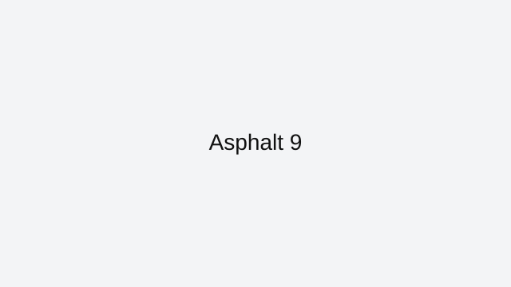

Asphalt 9
Asphalt 9 is listed on ArcadeZone as part of our broader browser game library.
We keep this page available for players who want direct access to the original source. Core controls, external link details, and related game navigation are included below.
Related reviewed games: Drift Hunters.
What you'll love
- Curated review page with practical strategy guidance and clean navigation.
- Direct access to browser gameplay source with no installs required.
- Category fit: Racing gameplay style with related recommendations.
Game essentials
- Category: Racing
- Game type: Arcade
- Page status: Archive listing (not indexed)
- Play format: opens the original browser source in a new tab

How to play
Use arrow keys or WASD for steering and throttle. Brake earlier than expected and keep exits clean for better lap consistency.
Tips & Tricks
- Learn controls first and avoid rushing into difficult sections.
- Prioritize consistent, low-risk play over flashy attempts.
- Use related reviewed games to find similar mechanics and improve faster.
Play
Use the verified source link below to launch the game in a new tab.
Open Asphalt 9 (external)Related games
Related reviewed games: Drift Hunters.
More from ArcadeZone
Developer & Credits
ArcadeZone reviews Asphalt 9 for control clarity, replay value, and accessibility before listing it as curated content. We link to the original browser source and provide player-focused guidance on this page.